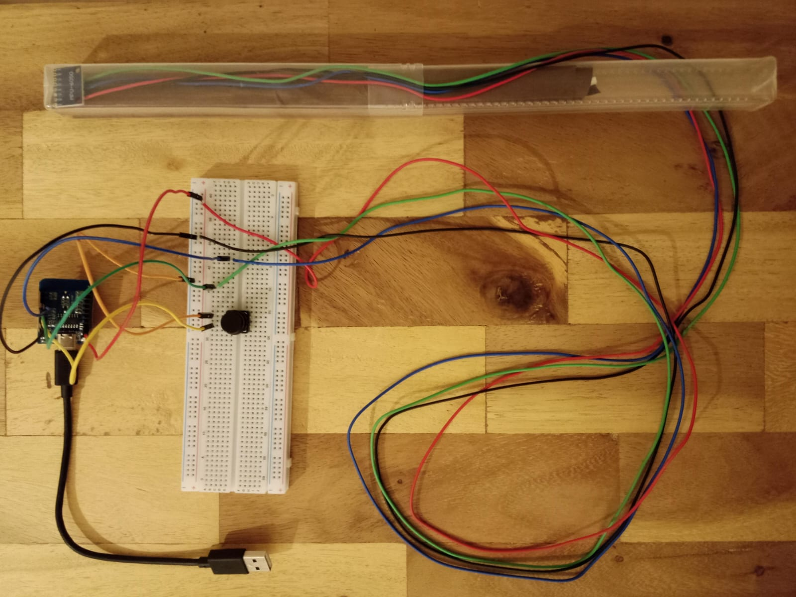
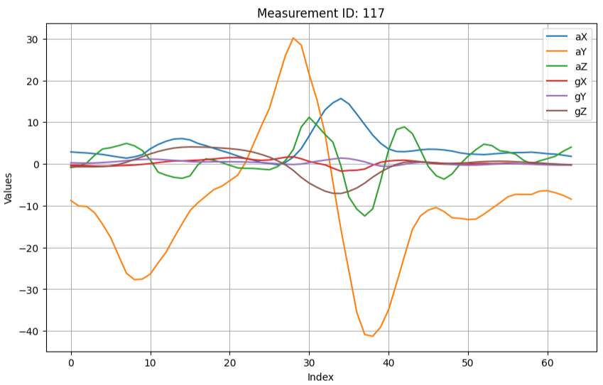
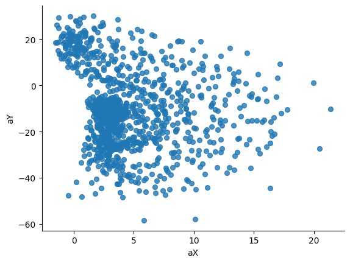
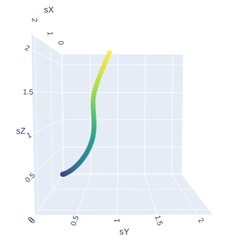

This blog post is part of a series of posts on my attempt to build an electronic magic wand. Click here to view all the posts.
For a proof of concept, I began with building a simple wired wand connected to a breadboard circuit. I used the plastic cover of my tin whistle as a makeshift wand body. I soldered an MPU-6050 sensor with long multicoloured wires and put it inside the wand body, with paper stuffed behind it to hold it in place. I also put a button on the breadboard, which I would hold down when performing some wand movement, to know when to start recording the IMU data.
I initially wanted to start experimenting with an Arduino Uno, but realized soon that its 2KB RAM was tragically insufficient for my use case. I then used an ESP32 D1 Mini as the microcontroller. It’s small enough that it could fit inside the wand’s body (which, of course, would be required in the final wand), but I kept it outside for now while I was still experimenting.

Data collection
My wand has an inherent orientation directionality because the IMU will always measure the acceleration due to gravity. Due to this, I wanted to record data for analysis in different orientations of the wand. If we say taht the side of the wand where the MPU-6050 is visible as the main face, then I wanted to record data with the face up, face turned left and face turned right.
I started collecting data by trying out the wand movements for Alohomora and Lumos. I took 170 readings in total:
{kind=link}
{kind=link}
- 1 - 50: Alohomora, face up
- 51 - 70: Alohomora, face turned left
- 71 - 90: Alohomora, turned right
- 91 - 110: Lumos, face up
- 111 - 130: Lumos, face turned left
- 131 - 150: Lumos, face turned right
- 151 - 170: Lumos, face turned at some random angle between right and up
The IMU data was collected at a sampling rate of approx. 100Hz. Each reading comprised 6 values: The x, y & z accelerometer measurements, and the x, y & z gyroscope measurements.
A sample plot for measurement 117 (Lumos, face turned left):

Data Analysis
I started by plotting some rudimentary visualizations. I was excited to see that I could obviously make out the movement in those plots. For example, this is the scatter plot for aY vs aX, for measurements 111 - 130 (Lumos, face turned left), and you can easily see the movement pattern:

Enthralled, I quickly began with my planned next step: double integrate the accelerations with time to get the 3D position over time. For this, I needed to subtract the effects of gravity from my readings. I could not just subtract 9.8m/s2 from a fixed axis, because the wand could be in different orientations. I tried 2 different ways to solve this, both of which should work for all wand orientations, but with the assumption that the orientation of the want doesn’t change during the spell:
- Possibly, the wand is still at the beginning and the end of the spell. Then, the average of the first and the last readings should give the gravity vector.
- From the whole set of measurements, find out those where the magnitude of the acceleration is close to 9.8m/s2. The average of these measurements would give the gravity vector.
Unfortunately, none of these ideas worked. The minor changes in the orientation of the wand during the spell caused errors large enough that the positions I calculated had no resemblance to the wand movement I had performed. Here is a sample of the position over time for measurement 73 (Alohomora, face turned right):

This does not look like Alohomora at all, and my wand certainly didn’t move 2 metres while performing the spell.
The issue was that my calculated gravity vector did not correctly represent gravity during the whole period of performing the spell. Perhaps I needed to use the gyro data to somehow find out when the orientation of the wand changed? But at this point, I was utterly disappointed and decided that it was a problem for later.